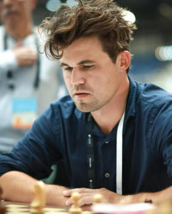
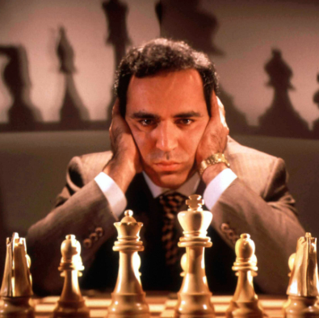
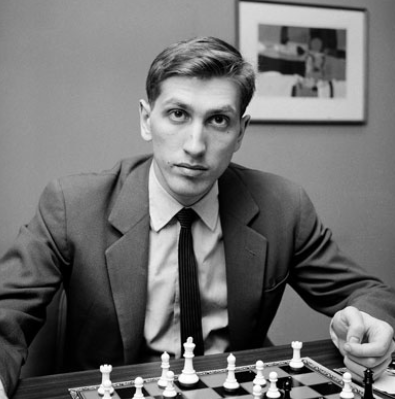
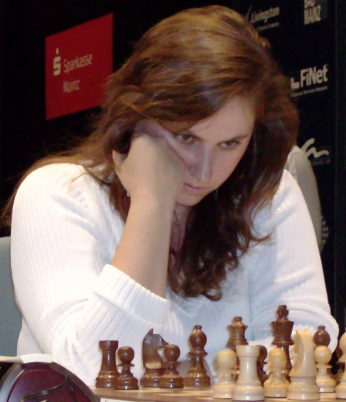

Legjobb sakkjátékosok
Az "ELO" rendszer
Az ELO-rendszer egy pontozási rendszer, amelyet a játékosok erősségének mérésére használnak. Minél magasabb az ELO pontszám, annál erősebb a játékos. Például Magnus Carlsen ELO pontszáma 2850 körül mozog, ami a világ élvonalát jelzi. Az ELO-rendszer figyelembe veszi a győzelmeket, vereségeket és döntetleneket is, és az ellenfél erősségétől függően adja vagy vonja le a pontokat.
| Név | Elo | Ország |
|---|---|---|
| Carlsen, Magnus | 2840 | NOR |
| Nakamura, Hikaru | 2810 | USA |
| Caruana, Fabiano | 2795 | USA |
| Keymer, Vincent | 2776 | GER |
| Erigaisi Arjun | 2775 | IND |
| Firouzja, Alireza | 2762 | FRA |
| Praggnanandhaa R | 2761 | IND |
| Giri, Anish | 2760 | NED |
| Wei, Yi | 2754 | CHN |
| Gukesh D | 2754 | IND |
| So, Wesley | 2753 | USA |
| Anand, Viswanathan | 2743 | IND |
| Rapport, Richard | 2741 | HUN |
| Dominguez Perez, Leinier | 2738 | USA |
| Vachier-Lagrave, Maxime | 2734 | FRA |
Jelenlegi kiemelkedő játékosok
A mai sakkvilágban több nagymester is kiemelkedik. Magnus Carlsen, Fabiano Caruana, Ding Liren, Ian Nepomniachtchi és más top 10-es játékosok rendszeresen szerepelnek a nemzetközi versenyeken, és szoros küzdelmet folytatnak a világelsőségért.

Garry Kasparov
Garry Kasparov a modern sakk egyik legendája. 1985 és 2000 között volt világbajnok, és jelentős hatást gyakorolt a sakk fejlődésére. Kiemelkedett a számítógépes sakk és a stratégiai játéktervezés terén is.

Bobby Fischer
Bobby Fischer az amerikai sakk egyik ikonikus alakja. 1972-ben világbajnok lett Boris Spassky ellen, ezzel véget vetve a szovjet dominanciának. Taktikai érzéke és kreativitása ma is példaértékű a sakkozók számára.

Polgár Judit
Polgár Judit a történelem legerősebb női sakkozója, és Magyarország büszkesége. Már gyermekkorában kimagasló eredményeket ért el, és első nőként került be a férfi nagymesterek közé. Számos férfi nagymestert is legyőzött, és 1991-ben megszerezte a nagymesteri címet. Magyarországon több sakkversenyen is ő a minta, és a női sakk népszerűsítésében kulcsszerepet játszott.
